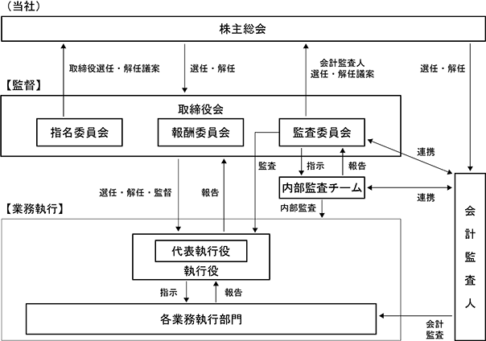

該当事項はありません。
該当事項はありません。
③ 【その他の新株予約権等の状況】
該当事項はありません。
該当事項はありません。
(注) 利益による自己株式の消却
2024年１月20日現在
(注) 自己株式63,352株は「個人その他」に633単元、「単元未満株式の状況」に52株含まれています。
2024年１月20日現在
(注) 上記のほか自己株式63,352株を保有しています。
2024年１月20日現在
2024年１月20日現在
【株式の種類等】 普通株式
該当事項はありません。
該当事項はありません。
該当事項はありません。
①〔会社の配当に関する基本方針〕
当社は中間、期末の年２回の配当を基本方針としています。配当は業績連動とし、安定配当政策は行いません。よって上半期の営業成績のみで配当額を決定できない場合は年１回の期末のみの配当を行っております。
既製品の持続性が弱く、かつ、新製品の成否が予測し難い業種であり、それゆえに「持続性」を最重視した経営に徹しています。しかし、消費者ニーズが流動的なのは避け難く、株式公開以来実行してきたように、決算時の業績をほぼそのまま配当政策に反映させていただく方針を今後も継続してまいります。
配当額の具体案は配当可能な剰余金の0から100％までの範囲で次の要素を勘案の上、決定しています。
ａ．剰余金の額(業績とは別に自己資本比率55～65％の維持を上場以来方針として持ち続けています。)
ｂ．為替、有価証券の評価損益
ｃ．適切な信用力を維持できる財務内容の確保(自己資本比率の推移)
ｄ．資金需要の状況
ｅ．自己株式の買入れの有無とその額
なお、株主の皆様への将来的な利益還元のためにも、収益性改善という大きな課題に取り組みながら、中長期を見据えて身の丈に合った成長を続ける経営に切り替えていく改革の途上におります。それに伴い、主に新事業の研究開発のための先行投資、およびそれに伴う内部留保を、積極的に行う見通しでおります。
②〔当期配当について〕
上記方針①を踏まえ、決算時の業績をもとに期末配当額を審議しました。当期期末配当額は2024年３月11日の取締役会決議により、１株当たり48円00銭といたしました。
なお、剰余金の配当の支払請求権の効力発生および支払開始日は2024年４月15日といたします。
③〔剰余金の配当の決定機関について〕
当社は剰余金の配当について、法令に別段の定めのある場合を除き、株主総会の決議によらず、取締役会の決議により定めることを定款で定めております。
④〔配当の基準日について〕
当社の期末配当の基準日は毎年１月20日、中間配当の基準日は毎年７月20日と定款に定めております。
コーポレート・ガバナンスに関する基本的な考え方
当社は小規模ながら、既に公開年度より取締役会の構成の改革を行い、当社と直接利害関係を持たない社外取締役の人数を過半数と定款に定め、同時に、経営の監視と業務執行の責務別の報酬制度の有り方の基準をつくりました。また、その結果を個人別に株主の皆様にディスクローズする等、どこよりも真っ先に徹底したコーポレート・ガバナンス体制を自主的に作り実行してまいりました。今後も当該方針を継続して参ります。
① コーポレートガバナンスの状況の概要
イ．会社の機関の基本説明
a.取締役会
当社の重要意思決定を行う取締役会の構成は、当事業年度は、執行役兼務の社内取締役１名と、社外取締役３名の計４名で組織され、2024年４月12日に開催した定時株主総会後は、執行役兼務の社内取締役１名と、社外取締役３名の計４名で組織されています。
(構成員の氏名)
取締役兼代表執行役 桐渕真人
社外取締役 伊藤拓（議長）、同森本美成、同藤本明徳
(注) １．市川正史氏は、2023年４月13日開催の第46回定時株主総会において退任されましたので、就任中に開催された取締役会の出席状況を記載しております。
２．藤本明徳氏は2023年４月13日開催の第46回定時株主総会において就任されましたので、就任後に開催された取締役会の出席状況を記載しております。
(取締役会の活動状況)
取締役会は３か月に１回定時会を開催することを規定しており、当期は11回開催し、出席状況は以下の通りです。具体的な検討内容は、経営の基本方針や重要事項の決議及び取締役の業務執行状況の監査・監督を行っております。また、法令、定款に定められた事項のほか、経営状況や予算と実績の差異分析など、経営の重要項目に関する決議・報告を行っております。
b.指名委員会
指名委員会は、社外取締役３名及び社内取締役１名の計４名（含委員長）で構成されており、委員の過半数を社外取締役で構成することにより、指名の適正性を確保する体制としております。指名委員会では、株主総会に提出する取締役の選任および解任に関する議案の内容を決定しております。
(注) １．市川正史氏は、2023年４月13日開催の第46回定時株主総会において退任されたことに伴い、指名委員会の委員も退任しており、こちらは就任中の出席状況を記載しております。
２．藤本明徳氏は2023年４月13日開催の第46回定時株主総会において就任されたことに伴い、指名委員会の委員に就任しており、こちらは就任後に開催された指名委員会の出席状況を記載しております。
c.報酬委員会
報酬委員会は、社外取締役３名（含委員長）のみで構成することにより、報酬の適正性を確保する体制としております。報酬委員会では取締役および執行役が受ける報酬等の方針の策定および個人別の報酬等の内容等を決定しております。
(注) １．市川正史氏は、2023年４月13日開催の第46回定時株主総会において退任されたことに伴い、報酬委員会の委員も退任しており、こちらは就任中の出席状況を記載しております。
２．藤本明徳氏は2023年４月13日開催の第46回定時株主総会において就任されたことに伴い、報酬委員会の委員に就任しており、こちらは就任後に開催された報酬委員会の出席状況を記載しております。
d.監査委員会
監査委員会は、社外取締役３名（含委員長）で構成されております。監査委員会では、取締役・執行役の業務執行の監査・監督及び株主総会に提出する会計監査人の選任・解任議案の内容を決定しております。会計監査人および内部監査部門との連携を図りながら、適法性監査及び妥当性監査を実施することにより、監査を通じた監督機能の強化を図っております。
e.執行役会
執行役は、取締役会において決定された事項および重要事業提案の執行に専念いたします。執行役は４名で、当事業年度は内１名が代表執行役を務めました。なお、2024年４月12日に開催した取締役会において執行役４名を再任しました。また、執行役４名の内１名が代表執行役に選任されています。
（取締役会及び各委員会の構成（◎：議長・委員長））
上記企業統治の体制の概要は、下図のとおりです。

ロ．当該体制を採用する理由
当社は商法改正を機会に2003年４月より、より透明性の高い経営を目指して委員会設置会社（現 指名委員会等設置会社）に移行し、業務執行を担う執行役と、社外取締役が過半数を占める取締役会とを分離し、業務執行の機動性・柔軟性を高めつつ、取締役会が執行役を監督しております。
また、社外取締役が過半数を占める指名委員会・報酬委員会・監査委員会の３委員会を設置しております。
以上により、「監督と執行の分離」の徹底を図り、経営の透明化を高めております。
ハ．内部統制システムの整備状況
当社は、業務の適正を確保するための体制の整備に関する基本方針を取締役会で決議し、この決議に基づき内部統制システムを適切に整備・運用しております。取締役会で決議した基本方針及び運用状況は、以下のとおりです。
1) 執行役の職務執行が法令、定款に適合することを確保するための体制
ａ．各執行役は、取締役会に報告すべき事項を自ら取締役会で報告しており、常勤取締役は、業績検討会・執行役会等の重要な会議に出席し、監督的視点から執行役の業務執行状況を把握・助言を行っています。
ｂ．全執行役で構成する執行役会を月１回開催し、効率性、有効性、妥当性などの事前調査と確認を経て、業務執行に関する重要事項に関して議論し決定しています。
2) 業務の適正を確保するための体制
ａ．監査委員会の職務を補助すべき取締役及び使用人に関する事項
監査委員会が必要とした場合に、監査委員会の職務を補助する取締役及び使用人による事務局を置くこととします。
ｂ．前号の取締役及び使用人の執行役からの独立性に関する事項
前号の事務局に属する取締役及び使用人の任命、異動、評価等については、事前に監査委員会の意見を聴取するものとし、執行役はこれを尊重します。
ｃ．執行役及び使用人が監査委員会に報告をするための体制その他の監査委員会への報告に関する体制
ⅰ）執行役及び使用人並びに子会社の役員及び使用人は、監査委員会から業務執行に関する事項の報告を求められた場合には、速やかに報告を行わなければならないものとします。監査委員会は、必要に応じて、執行役及び使用人並びに子会社の役員及び使用人から説明・報告を求めることが出来ます。
ⅱ）執行役は、会社に著しい損害を及ぼすおそれのある事実を発見した時は、直ちに、監査委員会に当該事実を報告することを規定した執行役会規程を制定しています。
ⅲ）ⅰ）に関し、監査委員会に当該事実を報告したことを理由として報告した者が不利益な扱いを受けないよう内部通報制度運用規程に明記し、管理することとします。
ⅳ）監査委員会は、会計監査人と定期的に協議を行い、適時報告を受けます。
ｄ．監査委員の職務の執行について生ずる費用又は債務の処理に係る方針に関する事項
当社の監査委員から、その職務の執行について、費用の前払、支出した費用及び利息の償還、負担した債務の債権者に対する弁済等が請求された場合には、監査委員の職務の執行に不要であることが明らかでない限り、速やかにその請求に応じます。
ｅ．その他監査委員会の監査が実効的に行われることを確保するための体制
ⅰ）代表執行役および会計監査人は、それぞれ監査委員と適宜会合を持ち、当社が対処すべき課題、監査委員会による監査の環境整備の状況、監査上の重要課題等について意見を交換し、代表執行役、会計監査人および監査委員の間で相互認識を深めます。
ⅱ）監査委員は、執行役等の職務の執行の監督の目的から、経営にかかわる重要な会議に出席する機会を、また必要に応じて、議事録・会議資料等を閲覧する機会を与えられます。
3) 損失の危険の管理に関する規程その他の体制
ａ．執行役は、会社に著しい損害を及ぼす恐れのある事実を発見した時は、直ちに監査委員に当該事実を報告することを規定した執行役会規程を制定しています。
ｂ.「危機管理室」を設け、代表執行役が委員長となり、当社製品の品質管理の徹底状況を報告させ、改善課題等の職長との共有を四半期毎に行い下部組織に常時認識を促しております。また、「危機管理室」では品質に限らず、生産国における供給上のリスク他当社グループのリスク評価を行いその管理および低減に努めています。
個別の損失危険につきましては、以下の取締役会決議をしています。
ⅰ）執行役は、取締役会への為替予約の方針及び執行状況を報告する義務を課す決議
ⅱ）取引信用保険を更新する決議
4) 執行役の職務の執行が効率的に行われることを確保するための体制
ａ．経営の監督機能（取締役会）と業務執行機能（執行役）を分離し、執行役への大幅な権限委譲を行うことで、業務執行のスピードを向上させます。
ｂ．執行役の職務分掌、指揮命令系統、決裁権限等に関する規定を整備し、それらの明確化と周知徹底をします。
ｃ．全執行役で構成する執行役会議を定期的に開催し、効率性、有効性、妥当性などの検証を経て、業務執行に関する重要事項を決定します。
5) 使用人の職務の執行が法令及び定款に適合することを確保するための体制
社員は法令違反の隠蔽、意図的違反の議決、内部機密事項の漏洩が行われることを発見した時は、直ちに監査委員会または外部機関に当該事実を報告しなければならない旨を、従業員服務規律に定めています。
6) 当社及び当社子会社からなる企業集団における業務の適正を確保するための体制
ａ．子会社の職務の執行に係る事項の報告に関する体制として、子会社業務についても適宜報告を求める体制をとるとともに、子会社の重要な事業運営に関する事項については、当社において取締役会への報告を行うことを定めています。
ｂ．子会社の損失の危険の管理規程として当社担当者及び担当執行役は会社に著しい損害を及ぼすおそれのある事実を発見した場合は直ちに当社監査委員に当該事実を報告することを定めています。
ｃ．子会社の取締役等の職務の執行が効率的に行われることを確保するために子会社による決裁権限規程を定めています。
ｄ．子会社の取締役の職務執行が法令及び定款に適合することを確保するために当社の取締役は子会社の取締役を兼務し、職務の執行状況を随時把握し指導することにしています。
7) 内部統制システムの評価体制
執行役会により任命を受け、当該手続きから独立した者において内部統制評価を実施し、その実施結果については執行役会へ報告を行います。評価の状況については、会計監査人と協議を行い、執行役会より監査委員会に報告する体制となっております。監査委員会は重要な事項について取締役会に上申し、取締役会はその内容について審議しております。
ニ．会社と会社の社外取締役の人的関係、資本的関係または取引関係その他の利害関係の概要
当社と社外取締役との資本関係は（2）[役員の状況] (1) 取締役の状況に記載のとおりであり、人的関係または取引関係その他の利害関係はありません。
なお、社外取締役を選任するための独立性に関する基準等は定めておりませんが、当社は指名委員会等設置会社としてすでに業務執行（執行役）と監視（社外取締役）が分離されています。実質的には社外取締役のみで構成される監査委員会が独立役員の役割を既に果たしているものと認識しております。そのため社外取締役、監査委員の森本美成氏、伊藤拓氏、藤本明徳氏の３名を独立役員に指定しております。
② 取締役の定数
当社の取締役は７名以内とする旨定款に定めております。
③ 取締役の選任の決議要件
当社は、取締役の選任決議について、議決権を行使することができる株主の議決権の３分の１以上を有する株主が出席し、その議決権の過半数をもって行う旨及び累積投票によらないものとする旨定款に定めております。
④ 株主総会の特別決議要件
当社は、会社法第309条第２項に定める株主総会の特別決議要件について、議決権を行使することができる株主の議決権の３分の１以上を有する株主が出席し、その出席した株主の議決権の３分の２以上をもって行う旨定款に定めております。これは、株主総会における特別決議の定足数を緩和することにより、株主総会の円滑な運営を行うことを目的とするものであります。
⑤ 剰余金の配当等の決定機関
当社は、剰余金の配当等会社法第459条第１項各号に定める事項について、法令に別段の定めがある場合を除き、株主総会の決議によらず、取締役会の決議により定める旨定款に定めております。これは、剰余金の配当等を取締役会の権限とすることにより、株主への機動的な利益還元を行うことを目的とするものであります。
⑥ 取締役及び執行役の責任免除
イ．当社は、職務の遂行にあたり期待される役割を十分に発揮できるようにするため、会社法第426条第1項の規定により、取締役会の決議によって、取締役（取締役であった者を含む。）の会社法第423条第1項の賠償責任について法令に定める要件に該当する場合には賠償責任額から法令に定める最低責任限度額を控除して得た額を限度として免除することができる旨を、定款に定めております。
ロ．2016年４月13日開催の定時株主総会において、上記イ.の定款条項に加え、会社法第427条第１項の規定により、社外取締役との間で同法第423条第１項に定める賠償責任を限定する契約を締結することができる旨を追加し決議されております。当該契約に基づく損害賠償責任限度額は、法令の定める最低責任限度額としております。
男性
(1) 取締役の状況
(2) 非常勤 社外取締役の状況
(注) １. 社外取締役の３名は、会社法第２条第15号の要件を満たしております。
２. 当社は指名委員会等設置会社です。2024年２月13日開催の取締役会で選任され、就任した委員会の各委員は下記のとおりです。
３. 第47期指名委員会により指名された取締役のうち、社外取締役の指名理由は、以下のとおりです。
① 森本美成氏は野村證券㈱および、ベンチャーキャピタル、ジャフコグループ㈱の勤務を通じて、国内外企業の経営・育成に携わってきました。特に世界の経済市場の動向、金融の知識・経験も豊富で事業経営の知見を有した専門家として、当社経営の監視・監督に当たっていただくことを期待したためです。同氏は現在当社の社外取締役であり、その就任期間は2024年１月期に係る定時株主総会終結の時をもって15年となります。
② 伊藤拓氏は弁護士です。グローバルな法律・経営など幅広い専門知識や経験をもって当社経営の監視・監督に当たっていただくとともに、海外展開をはじめ経営全般への助言指導をしていただくことに期待したためです。同氏は、現在当社の社外取締役であり、その就任期間は2024年１月期に係る定時株主総会終結の時をもって８年となります。
③ 藤本明徳氏はKDDI㈱において内部統制部長としてKDDIグループ全体の内部統制制度を立ち上げるなど、コーポレートガバナンスの専門知識が豊富であり、当社課題である人的資本戦略やDX促進なども含めたコーポレート業務に関するエキスパートとして当社経営の監視・監督に当たっていただくことを期待したためです。同氏は、現在当社の社外取締役であり、その就任期間は2024年１月期に係る定時株主総会終結の時をもって１年となります。
４. 取締役の任期は2024年１月期に係る定時株主総会の終結の時から2025年１月期に係る定時株主総会終結の時までであります。
(3) 執行役の状況
(注)１. 取締役の状況をご参照下さい。
２. 執行役の任期は、2024年１月期に係る定時株主総会終結後最初に開催された取締役会の終結の時から2025年１月期に係る定時株主総会終結後最初に開催される取締役会終結の時までであります。
３. 執行役 小田桐裕子は2024年１月度より休職をしております。
(3) 【監査の状況】
① 監査委員会監査の状況
当社は、指名委員会等設置会社であるため、監査役ではなく「監査委員会」を設置しております。監査委員会は３名の取締役によって構成され、この３名はいずれも社外取締役であります。
監査委員会は、取締役・執行役の経営意思決定に関する適法性・妥当性の有無、内部統制システムの監視・検証、会計監査人の監査の方法及び結果のレビュー、会計監査人の選任・解任の有無の決定を行っております。
当事業年度において当社は監査委員会を４回開催しており、個々の監査委員の出席状況については次のとおりであります。
※2023年４月13日開催の第46回定時株主総会にて、市川正史は退任し、藤本明徳が就任しました。
監査委員会における主な検討事項として取締役・執行役の経営意思決定に関する適法性・妥当性の監査、不正の行為又は法令もしくは定款に違反する事実のチェック、構築・運用されている内部統制システムの監視・検証を行うとともに、会計監査人監査についても独立の立場を保持し適正な監査を実施しているかのレビュー等を厳格に行いました。
② 内部監査の状況
当社における内部監査は内部監査チームが担当しており、執行役会により任命を受けた5名で構成されております。内部監査チームは内部監査規程に基づき事業年度ごとに内部監査計画を策定し、代表執行役の承認を得たうえで、内部監査を実施しております。その実施結果によって洗い出された指摘事項を代表執行役へ書面提示し報告します。監査にあたっては、財務報告の信頼性、業務の効率性及び有効性、法令遵守の観点から、リスクアプローチによる効率的な監査を進めております。また内部監査チームは社外取締役で構成された監査委員会に指摘事項を報告のうえ、適宜に協議しております。
③ 監査委員会監査、内部監査及び会計監査人監査の相互連携並びにこれらの監査と内部統制部門との関係について
１）監査委員会と会計監査人の連携状況
監査委員会は会計監査人による会計監査報告会を定期的に開催し、会計監査人の監査方針や監査計画について詳細な説明や積極的に意見・情報交換を行い、適正で厳格な会計監査が実施できるよう努めております。
２）監査委員会と内部監査の連携状況
当社は、指名委員会等設置会社で監査委員会を設置しておりますが、監査委員会の職務を補助する使用人による事務局を置いております。監査委員会は内部監査チームと連携し、監査の効率性、実効性を高める努力を行っております。執行役会により任命を受け、当該手続きから独立した者において内部統制評価を実施し、その実施結果については執行役会へ報告を行います。評価の状況については、会計監査人と協議を行い、執行役会より監査委員会に報告する体制となっております。監査委員会は重要な事項について取締役会に上申し、取締役会はその内容について審議しております
３）監査委員会監査と執行役の関係
監査委員は、執行役等の職務の執行の監督の目的から、経営にかかわる重要な会議に出席する機会を、また必要に応じて、議事録・会議資料等を閲覧し、執行役が策定する中期経営計画並びに年度予算の審議プロセスを監督し、経営目標の妥当性を確認しております。
④ 会計監査の状況
・業務を執行した公認会計士の氏名及び所属する監査法人名
田 辺 拓 央 (有限責任 あずさ監査法人)
香 月 まゆか (有限責任 あずさ監査法人)
・継続監査期間 29年間
上記は、当社が新規上場した際に提出した有価証券届出書における監査対象期間より前の期間については調査が著しく困難であったため、有価証券届出書における監査対象期間以降の期間について記載したものです。実際の継続監査期間は、この期間を超える可能性があります。
・監査業務に係る補助者の構成
公認会計士 ６名
その他 ６名
⑤ 監査法人の選定方針と理由
日本監査役協会が公表する「会計監査人の評価及び選定基準策定に関する監査役等の実務指針」等を踏まえ、会計監査人としての独立性、専門性、品質管理体制及び監査報酬等を総合的に勘案し、選定を行っております。
また、監査委員会は、会計監査人が会社法第340条第１項各号に定める項目のいずれかに該当すると認められる場合は、監査委員全員の同意に基づき、会計監査人を解任いたします。
⑥ 監査委員及び監査委員会による監査法人の評価
監査委員及び監査委員会は、会計監査人からの報告や意見交換等を通じて会計監査の実施状況を把握し、会計監査人の監査体制及び職務遂行状況等について総合的に評価を行っております。
(注) 当社と会計監査人との間の監査契約において、会社法に基づく監査と金融商品取引法に基づく監査の監査報酬等の額を明確に区分しておらず、実質的にも区分できませんので、合計額を記載しております。
(注) 当社における非監査業務の内容は、税務アドバイザリー業務であります。
③ その他重要な報酬の内容
該当事項はありません。
④ 監査報酬の決定方針
当社の監査公認会計士等に対する監査報酬については、監査法人の監査計画をもとに、類似企業（同業、同規模等）の情報を考慮した上で、相互に適正妥当と合意できる金額を協議し、監査委員会の同意を得て決定しております。
⑤ 監査役会が会計監査人の報酬等に同意した理由
取締役会が提案した会計監査人に対する報酬等に対して、当社の取締役会が会社法第399条第１項の同意をした理由は、会計監査人の監査計画の内容、会計監査の職務遂行状況及び報酬見積りの算出根拠等についてその適切性・妥当性を検証した結果、合理的な額であると判断したためであります。
(4) 【役員の報酬等】
（役員報酬等）
(注) １．執行役を兼務する取締役については、執行役の欄に記載しております。
２．執行役を兼務する取締役には、取締役としての報酬は支給しておりません。
３．執行役 小田桐裕子は休職のため2024年１月度より役員報酬の支給を停止しています。
４．上記には2023年４月13日開催の第46回定時株主総会終結の時をもって退任した社外取締役１名を含んでおります。
執行役の個人別固定金額および業績連動報酬金額は報酬委員会において取り決めます。2024年１月期の個人別報酬につきましては、2023年４月13日の報酬委員会において審議し「役員の報酬等の決定に関する方針」に基づいて決定されました。
なお、報酬等の総額が１億円以上である者は存在しませんが、個人別報酬内容は以下のとおりです。
(注) １．報酬期間は毎期５月度から翌年４月度の12ヶ月間となっています。従いまして2024年１月期は2023年５月度から2024年４月度までが対象期間となります。
２．2024年１月期の固定報酬は2023年４月13日の報酬委員会で決議し、業績連動報酬は2024年２月13日の報酬委員会で決議しました。
３．執行役 小田桐裕子は休職のため2024年１月度より役員報酬の支給を停止しています。
ハ.役員の報酬等の決定に関する方針＜報酬委員会で定めた取締役及び執行役が受ける個人別の報酬の内容の決定に関する方針＞
当社は、指名委員会等設置会社であり、取締役、執行役の報酬については、報酬委員会により方針が定められ、毎期の審議が委ねられます。
取締役は執行役に対して独立性を保つ必要があります。そのため、執行役と取締役を兼務する社内の取締役と、社外取締役とは分けて考えます。
社外取締役の報酬は、当社に生活を依存しない範囲の相応な固定金額とし、業績連動型とはしないものとします。
執行役兼務の社内取締役については、「執行役」としての任務に対し報酬を支払うこととし、「取締役」としての固定金額は、「ゼロ」とします。
執行役の報酬については、執行役の責務は取締役会から委任を受け、継続可能な株主利益の拡大を追求することから、前期の業績等を勘案して決定する個人別の固定金額に、株主利益に連動した業績連動の個人別の業績連動報酬を加算することとし、個人別報酬を取り決めます。
執行役の業績連動報酬については、金銭報酬のみとし、法人税法第34条第１項第３号に定める利益連動給与に該当する役員報酬を支給することとしております。
① 決定の方法
報酬委員会が毎年、取締役及び執行役の報酬等の決定に関する方針を定め決定しています。
② 具体的方針
取締役は執行役に対して独立性を保つ必要があります。そのため、執行役と取締役を兼務する社内の取締役と、社外取締役とは分けて考えます。
社外取締役の報酬は、当社に生活を依存しない範囲の相応な固定金額とし、業績連動型とはしないものとします。
執行役兼務取締役については、執行役としての任務に対し報酬を支払うこととし、取締役としての報酬金額は、「ゼロ」とします。
執行役の責務は取締役から委任を受け、継続可能な株主利益の拡大を追求することです。従って、執行役の報酬は、前期の業績等を勘案して決定する個人別の固定報酬に、株主利益に連動した業績連動の変動報酬を加算することとし、個人別報酬を取り決めます。
執行役に対する業績連動の変動報酬については、経営指標として掲げている「自己資本利益率（ROE）10％以上」の達成を支給対象のガイドラインとする算定式を用いて金銭支給とし、法人税法第34条第１項第３号に定める利益連動給与に該当する役員報酬を支給することとしています。
具体的な算定式につきましては、2022年4月13日開催の報酬委員会において2023年１月期以降の業績連動役員報酬の算定方法を下記のとおりといたしました。
a）当期のROE（※）が10％を超えた場合を支給対象とします。
b）算定の都合上、役員・従業員の賞与の損金計上前の財務諸表を基に、当期ROE（以下、暫定ROEと言う）を算出します。
暫定ROEを算定指標として以下の場合に応じ、それぞれに掲げる算定方法で支給額を決定します （１万円未満四捨五入）。
i．当期ROE（※）が10%以上15%以下の場合、以下の算定式によりそれぞれの支給額を算出し、これを上限として決定します。
代表執行役の変動報酬 ＝ （暫定ROE×100）×1,300,000 - 13,000,000
執行役の変動報酬 ＝ （暫定ROE×100）×900,000 - 9,000,000
ii．当期ROE（※）が15%以上の場合、以下の算定式によりそれぞれの支給額を算出し、これを上限として決定します。
代表執行役の変動報酬 ＝ （暫定ROE×100）× 1,500,000 - 16,000,000
執行役の変動報酬 ＝ （暫定ROE×100）× 1,100,000 - 12,000,000
なお、支給総額の上限金額は44,000千円とします。
※実際に発表される当期ROE（自己資本利益率）は、業績連動役員報酬および従業員賞与を損金計上後の当期の通期財務諸表に基づき算出された指標となります。
当期は、ｂ）に用いる暫定ROEが13.7％となりましたため、執行役に対する業績連動報酬の算定式に基づき、業績連動報酬の支給実施を2024年２月13日開催の報酬委員会において取り決めました。
■2025年１月期以降の業績連動型役員報酬について
2024年２月13日開催の報酬委員会において2025年１月期の業績連動役員報酬の算定方法について、2024年１月期の算定式を続行することを決議いたしました。
該当事項はありません。
(5) 【株式の保有状況】
当社は、投資株式の区分について保有目的を基準とし、保有目的が専ら株式の価値の変動又は株式に係る配当によって利益を受けることである場合を「純投資目的である株式投資」に区分し、保有目的がそれ以外である場合を「純投資目的以外の目的である投資株式」に区分しております。
当社は、保有先企業の動向、取引の状況、当該保有株式の市場価額等の状況を踏まえて、当該企業との業務提携のさらなる強化や、安定的な取引関係の維持・強化をはかることにより、当社の企業価値の向上に資すると認められる場合、政策保有株式を戦略的かつ限定的に保有することを基本方針としております。
また、政策保有株式については、そのリターンとリスク、事業上の関係、資本コスト等、その経済合理性と保有意義を踏まえた中長期的な観点から、随時、取締役会にて、継続保有の是非を含めた十分な検証を行い、この結果を反映した保有の目的等について説明を行うものとしております。当事業年度における検証の結果、各保有株式について保有の妥当性があることを確認しております。
政策保有株式に係る議決権の行使にあたっては、保有先企業の提案を無条件に賛成することはせず、当社との業務提携や取引関係の維持・強化を通じて、当社の企業価値向上に資すると認められるかどうかの観点から議決権行使を行うことを議決権行使の基準としております。
該当事項はありません。
該当事項はありません。
・特定投資株式
（注）2023年４月１日付で普通株式１株につき３株の割合で株式分割を実施しており表示株式は、分割後の株式数で表示しております。
・みなし投資株式
該当事項はありません。
該当事項はありません。
該当事項はありません。
該当事項はありません。